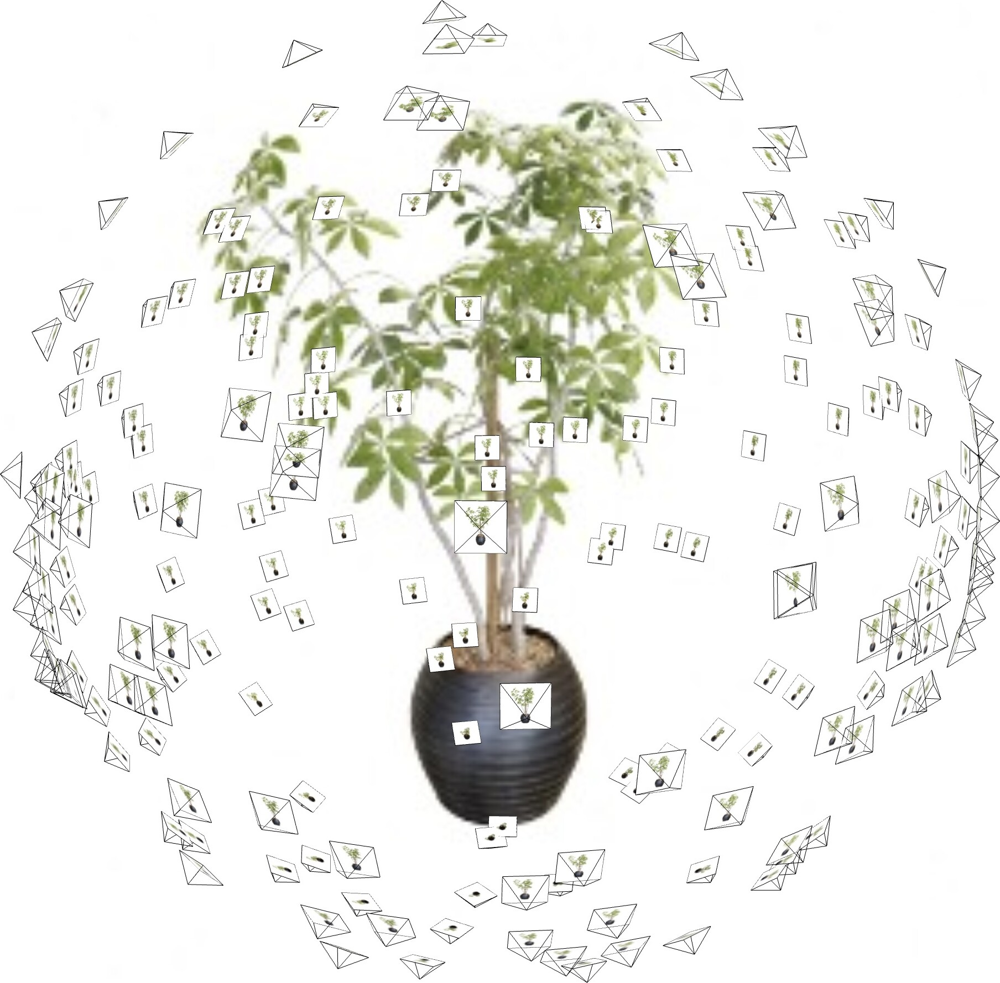
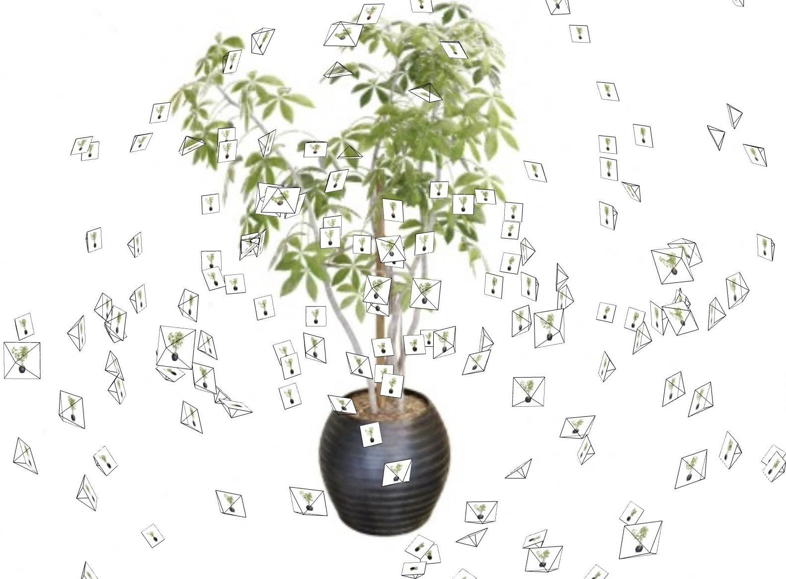

|

|
|

|
@InProceedings{turki2023pynerf,
title = {PyNeRF: Pyramidal Neural Radiance Fields},
author = {Turki, Haithem and Zollh\"{o}fer, Michael and Richardt, Christian and Ramanan, Deva},
booktitle={Thirty-Seventh Conference on Neural Information Processing Systems},
year = {2023}
}